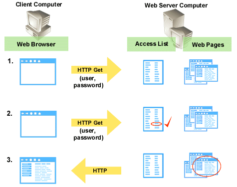

|
| ||
|
| ||
Microsoft Corporation
Updated April 15, 1999
Most UNIX Web servers maintain a list of users who have permission to use the Web server. This access file is maintained by the Web server and is entirely separate from the list of users and groups who can log on to the computer interactively.
Note Many Web servers that run on Microsoft® Windows® 95/98 and Microsoft® Windows NT® also use the UNIX security model. These include the following Web servers for which the Microsoft® FrontPage® Server Extensions are available: FrontPage Personal Web Server, Netscape FastTrack, Netscape Enterprise, Netscape Communications, Netscape Commerce, and O'Reilly WebSite. This description of the UNIX security model also applies to those servers.
A Web server's access file contains names and passwords for each user, and detailed information about the content, CGI (Common Gateway Interface) scripts, and other resources that each user is allowed to access. On Apache and NCSA Web servers, the file is named .htaccess; on Netscape servers, it is named .nsconfig. The access file associates users, groups, and IP addresses with various levels of permissions: GET (read), POST (execute), PUT (write), and DELETE. For example, an author using FrontPage would have permission to use HTTP POST commands (to access the FrontPage Server Extensions and save new content), and a site visitor with browse permissions would be permitted to use HTTP GET commands (to read content). The lists defining members of each group (for example, authors) are defined in separate files that are pointed to from the access file.
Multiple access files are often stored on a Web server. Each access file provides security for the directory containing it and for any subdirectories of that directory that do not contain their own access files. By creating access files throughout a Web server's content, different sets of users with varying levels of permissions can be given access to different areas of the server.
To access the host computer's file system and run scripts and programs on the host computer, the Web server runs as a UNIX account, usually "www." Because the Web server runs under a UNIX account, any process it runs and any files that it accesses must be available under the permissions of the same UNIX account. This can cause a security problem in a multihosted environment, because one user's CGI script could read files in another user's content area on the server. This problem is compounded if write access is supported, as it is with the FrontPage client. If a user's CGI script has sufficient permissions to write to a file in the user's own content area, the CGI script could write or overwrite files in other users' content areas.
To address this security issue (which is common to all CGI scripts, including the FrontPage Server Extensions), you can set the SUID (Set User ID) bit of a CGI script's execute permissions. This forces the Web server and the content being authored to switch to the UNIX user account of the owner of the CGI script process when the script is run. Because the script is stored in a content area, and the content owner's account is not likely to have permission to write to other users' content areas, setting the script's SUID bit protects against unauthorized writing of files. Using FrontPage Server Extensions administration tools, you can set the FrontPage Server Extensions executable files in each content area to run SUID.
In UNIX Web server authentication, when a site visitor browses to a page on a Web server:
If the GET cannot be executed under the user's authentication, the Web server returns a 401 error, indicating that the user is unauthorized. The Web browser then prompts for a new name and password and resubmits the request.

POSTs are handled in a similar manner. When a Web server receives an HTTP POST request, as is the case when an author using FrontPage sends a request to the FrontPage Server Extensions, the Web server checks the user's permissions in the appropriate access file. Once the user is authenticated, the Web server tries to run the program requested in the POST. If the SUID bit of the program is set, the process runs under the UNIX user account of the owner of the file. Otherwise, the process runs under the Web server's UNIX account.
UNIX Web servers usually authenticate client programs using Basic Authentication. When the server uses Basic Authentication, the Web browser (or the FrontPage client) prompts the user for a user name and password. The user name and password are then transmitted in clear text. (Some Web servers use an encryption technique known as MD5, but FrontPage does not support this method.)
FrontPage uses Basic Authentication because it is the only authentication technique that works through all firewalls and proxy servers. Because Basic Authentication transmits passwords across the network in an easily decoded format, it is very easy for network spies to steal passwords that are sent in this manner. If you are concerned about security, you should use Secure Sockets Layer (SSL) to encrypt all communications to and from your Web server.
Did you find this material useful? Gripes? Compliments? Suggestions for other articles? Write us!
© 1999 Microsoft Corporation. All rights reserved. Terms of use.